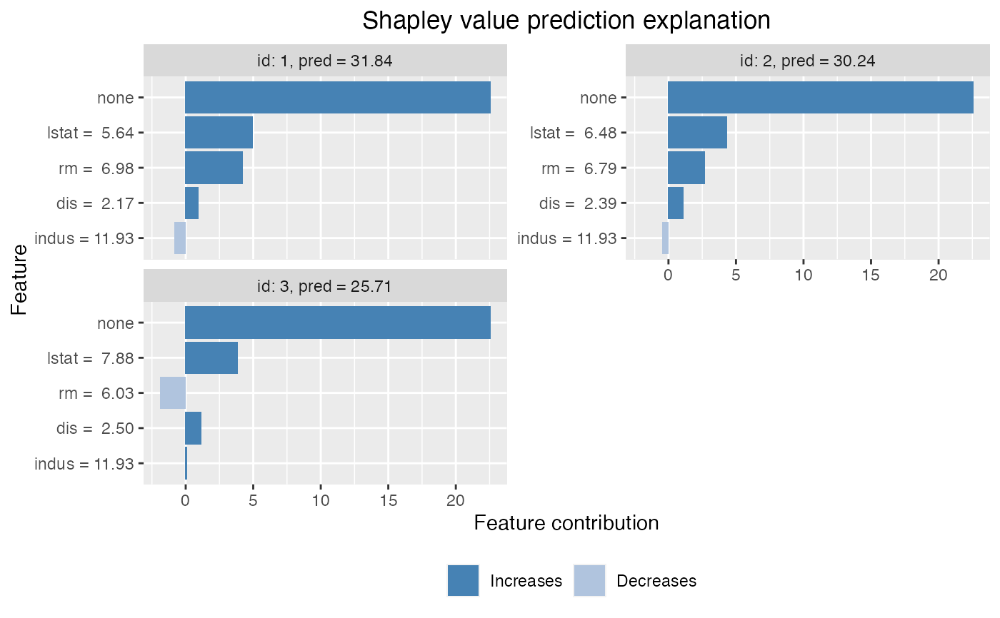
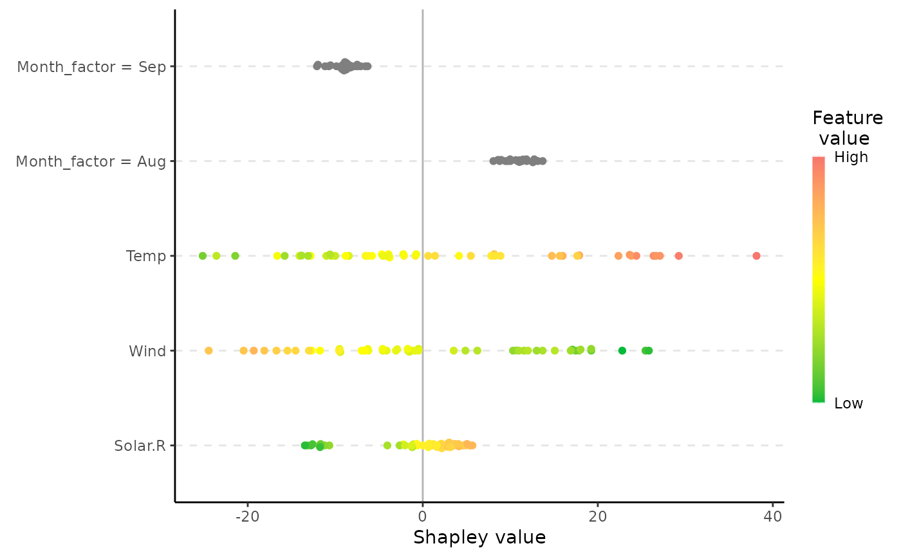

Plots the individual prediction explanations.
# S3 method for shapr
plot(
x,
plot_type = "bar",
digits = 3,
index_x_explain = NULL,
top_k_features = NULL,
col = NULL,
bar_plot_phi0 = TRUE,
bar_plot_order = "largest_first",
scatter_features = NULL,
scatter_hist = TRUE,
...
)An shapr object.
The output from explain().
Character.
Specifies the type of plot to produce.
"bar" (the default) gives a regular horizontal bar plot of the Shapley value magnitudes.
"waterfall" gives a waterfall plot indicating the changes in the prediction score due to each features
contribution (their Shapley values).
"scatter" plots the feature values on the x-axis and Shapley values on the y-axis, as well as
(optionally) a background scatter_hist showing the distribution of the feature data.
"beeswarm" summarises the distribution of the Shapley values along the x-axis for all the features.
Each point gives the shapley value of a given instance, where the points are colored by the feature value
of that instance.
Integer.
Number of significant digits to use in the feature description.
Applicable for plot_type "bar" and "waterfall"
Integer vector.
Which of the test observations to plot. E.g. if you have
explained 10 observations using explain(), you can generate a plot for the first 5
observations by setting index_x_explain = 1:5.
Integer.
How many features to include in the plot.
E.g. if you have 15 features in your model you can plot the 5 most important features,
for each explanation, by setting top_k_features = 1:5.
Applicable for plot_type "bar" and "waterfall"
Character vector (length depends on plot type).
The color codes (hex codes or other names understood by ggplot2::ggplot()) for positive and negative
Shapley values, respectively.
The default is col=NULL, plotting with the default colors respective to the plot type.
For plot_type = "bar" and plot_type = "waterfall", the default is c("#00BA38","#F8766D").
For plot_type = "beeswarm", the default is c("#F8766D","yellow","#00BA38").
For plot_type = "scatter", the default is "#619CFF".
If you want to alter the colors i the plot, the length of the col vector depends on plot type.
For plot_type = "bar" or plot_type = "waterfall", two colors should be provided, first for positive and
then for negative Shapley values.
For plot_type = "beeswarm", either two or three colors can be given.
If two colors are given, then the first color determines the color that points with high feature values will have,
and the second determines the color of points with low feature values.
If three colors are given, then the first colors high feature values, the second colors mid-range feature values,
and the third colors low feature values.
For instance, col = c("red", "yellow", "blue") will make high values red, mid-range values yellow,
and low values blue.
For plot_type = "scatter", a single color is to be given, which determines the color of the points on the
scatter plot.
Logical.
Whether to include phi0 in the plot for plot_type = "bar".
Character.
Specifies what order to plot the features with respect to the magnitude of the shapley values with
plot_type = "bar":
"largest_first" (the default) plots the features ordered from largest to smallest absolute Shapley value.
"smallest_first" plots the features ordered from smallest to largest absolute Shapley value.
"original" plots the features in the original order of the data table.
Integer or character vector.
Only used for plot_type = "scatter".
Specifies what features to include in (scatter) plot. Can be a numerical vector indicating feature index, or a
character vector, indicating the name(s) of the feature(s) to plot.
Logical.
Only used for plot_type = "scatter".
Whether to include a scatter_hist indicating the distribution of the data when making the scatter plot. Note that the
bins are scaled so that when all the bins are stacked they fit the span of the y-axis of the plot.
Currently not used.
ggplot object with plots of the Shapley value explanations
See the examples below, or vignette("understanding_shapr", package = "shapr") for an examples of
how you should use the function.
data("airquality")
airquality <- airquality[complete.cases(airquality), ]
x_var <- c("Solar.R", "Wind", "Temp", "Month")
y_var <- "Ozone"
# Split data into test- and training data
data_train <- head(airquality, -50)
data_explain <- tail(airquality, 50)
x_train <- data_train[, x_var]
x_explain <- data_explain[, x_var]
# Fit a linear model
lm_formula <- as.formula(paste0(y_var, " ~ ", paste0(x_var, collapse = " + ")))
model <- lm(lm_formula, data = data_train)
# Explain predictions
p <- mean(data_train[, y_var])
# Empirical approach
x <- explain(
model = model,
x_explain = x_explain,
x_train = x_train,
approach = "empirical",
prediction_zero = p,
n_samples = 1e2
)
#> Setting parameter 'n_batches' to 2 as a fair trade-off between memory consumption and computation time.
#> Reducing 'n_batches' typically reduces the computation time at the cost of increased memory consumption.
if (requireNamespace("ggplot2", quietly = TRUE)) {
# The default plotting option is a bar plot of the Shapley values
# We draw bar plots for the first 4 observations
plot(x, index_x_explain = 1:4)
# We can also make waterfall plots
plot(x, plot_type = "waterfall", index_x_explain = 1:4)
# And only showing the 2 features with largest contribution
plot(x, plot_type = "waterfall", index_x_explain = 1:4, top_k_features = 2)
# Or scatter plots showing the distribution of the shapley values and feature values
plot(x, plot_type = "scatter")
# And only for a specific feature
plot(x, plot_type = "scatter", scatter_features = "Temp")
# Or a beeswarm plot summarising the Shapley values and feature values for all features
plot(x, plot_type = "beeswarm")
plot(x, plot_type = "beeswarm", col = c("red", "black")) # we can change colors
}

# Example of scatter and beeswarm plot with factor variables
airquality$Month_factor <- as.factor(month.abb[airquality$Month])
airquality <- airquality[complete.cases(airquality), ]
x_var <- c("Solar.R", "Wind", "Temp", "Month_factor")
y_var <- "Ozone"
# Split data into test- and training data
data_train <- airquality
data_explain <- tail(airquality, 50)
x_train <- data_train[, x_var]
x_explain <- data_explain[, x_var]
# Fit a linear model
lm_formula <- as.formula(paste0(y_var, " ~ ", paste0(x_var, collapse = " + ")))
model <- lm(lm_formula, data = data_train)
# Explain predictions
p <- mean(data_train[, y_var])
# Empirical approach
x <- explain(
model = model,
x_explain = x_explain,
x_train = x_train,
approach = "ctree",
prediction_zero = p,
n_samples = 1e2
)
#> Setting parameter 'n_batches' to 10 as a fair trade-off between memory consumption and computation time.
#> Reducing 'n_batches' typically reduces the computation time at the cost of increased memory consumption.
if (requireNamespace("ggplot2", quietly = TRUE)) {
plot(x, plot_type = "scatter")
plot(x, plot_type = "beeswarm")
}
